本文主要关注内核中用于调度进程的各种机制，以及为了实现这些机制而引入的各种概念和数据结构。首先了解调度器「scheduler」的如下关键概念，有了这些基础才能深入理解调度器的各种不同活动和行为。
- 刻画进程重要性的负载权重「load weight」
- 进程的虚拟运行时间「virtual runtime」
- 进程时间片「time slice」和CFS运行队列的调度延迟「scheduling latency」
- 运行队列「run queue」、CFS运行队列和红黑树「Red Black Tree」
- 组调度「group scheduling」涉及的任务组「task group」和调度实体「scheduling entity」
- 调度类别「scheduling class」和调度策略「scheduling policy」
后续第二篇文章会分析调度器的核心部分，也就是常用的调度代码。涉及的知识点如下：
- 基于定时器「timer」中断的周期调度「periodic scheduling 」
- 非周期调度「aperiodic scheduling」
- 触发任务切换的调度点「scheduling points」
- 设置need_resched标志的调度请求「scheduling request」
- 调度核心函数__schedule()
- 进程唤醒函数
在研究完调度器核心之后，最后一篇文章将分析CFS「Completely Fair Scheduling)」调度器，它负责处理SCHED_NORMAL、SCHED_BATCH和SCHED_IDLE三种调度策略。涉及的内容如下：
- 将一个进程插入运行队列
- 从运行队列中挑选一个合适的进程
- 从运行队列中移除一个进程
- 处理周期滴答「periodic ticks」
- 管理调度实体「scheduling entities」的运行时间
- 管理时间片「time slices」
本文在最后会分析sched_init()函数，它会完成调度器正常工作所要求的初始化任务。
- Target Platform: Rock960c
- ARCH:arm64
- Linux Kernel:linux-4.19.27
负载权重「load weight」和虚拟运行时间「virtual runtime」
负载权重「load weight」：描述进程的重要性
CFS一个重要任务是公平地分配CPU运行时间给每个进程，但是这儿的公平并不是意味每个进程都花费相同的CPU运行时间。相反地，它更多的是说根据进程的重要性为每个进程分配相对应的CPU运行时间。浅显地说，一个重要的进程将获得更多的CPU执行时间，而一个不重要的进程将获得更少的CPU执行时间。尽管在引入CFS之前使用优先级「priority」的概念能够很好地表达进程的重要性，但是使用完全公平分配机制能够更完美地表达进程的重要性。为了公平分配CPU时间引入了负载权重的概念，其是由进程优先级「priority」决定的。负载权重不仅能够决定进程的虚拟运行时间，而且还能够确定进程占用的CPU份额和可用的时间片。
CFS调度器不仅会使具有较大负载权重的进程获得更少的运行时间，而且还会使它们更频繁地被运行。除此之外，进程可用的时间片「time slice」也将增大。进程优先级越高，负载权重也就越大，反之，进程优先级越低，负载权重也就越小。在内核中结构体struct load_weight用于表示和记录负载权重，因此当前进程的负载权重由结构体struct sched_entity的load字段表示。

图1 负载权重和进程优先级的关系
由图可推知，进程优先级增加一级，那么进程负载权重则增大约25%，相反进程优先级减少一级，那么进程负载权重则减少约20%。尽管进程的负载权重是由其优先级决定的，但是进程获得的CPU运行时间并不是恒定不变的。进程获得的CPU运行时间是根据当前进程的负载权重占总负载权重的比例确定的，总负载权重等于CFS运行队列中所有进程的负载权重之和。图2是CPU占用比例的示意图，占用比例会随着进程负载权重的不同而变化。
图2 进程的负载权重与CPU份额的关系 I
一个特定进程能够享用的CPU份额不仅取决于其自身的负载权重「load weight」，而且还依赖于CFS运行队列的总负载权重。假设进程A的负载权重是1024且始终不变，如果CFS运行队列的总负载权重增大了（有新的进程C加入队列），那么进程A占用的CPU份额自然就会降低，如图3 所示。
图3 进程的负载权重与CPU份额的关系 II
如果CFS运行队列存在两个进程，那么较高优先级的进程将能够多占用大约10%的CPU运行时间。
vruntime(virtual runtime)
在每次挑选合适的进程时，调度器都会选择虚拟运行时间最小的进程来作为下一个被执行的进程。进程实际花费的CPU执行时间被成为实际运行时间「real runtime」，而由负载权重加权计算得到时间被称为虚拟运行时间「virtual runtime」。如图4所示给出了计算虚拟运行时间的公式。
图4 负载权重「load weight」与虚拟运行时间「virtual runtime」的关系式
从上面计算公式可以算出，进程的负载权重越大，虚拟运行时间就会越小，当负载权重等于1024时，虚拟运行时间与实际运行时间是相等的。实际上在系统运行时，进程的虚拟运行时间是通过不断累加计算得到的，若进程的负载权重越大，那么虚拟运行时间的增涨也就越慢。相反，若负载权重越小，则虚拟运行时间的增涨也就相对更快一些。
如图5所示给出了虚拟运行时间的变化速率，三个进程的负载权重之比大约是1:2:3并且每个进程都实际执行了10s，然而三个虚拟运行时间之比大约是1:0.5:0.33，正好是负载权重之比的倒数（1/1 : 1/2 : 1/3）。
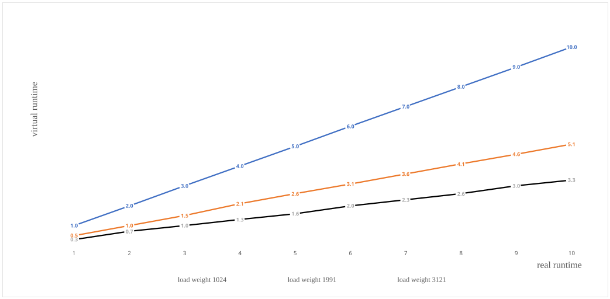
图5 虚拟运行时间「virtual runtime」的变化快慢（斜率）
即使消耗了相同的实际时间，但是虚拟运行时间还是会有所不同，因此进程被调度器选中执行的频率也会不相同。对于具有较大负载权重的进程，在运行一段时间后它们的虚拟运行时间会较少地增加，因此它们比负载权重较小的进程会更频繁地被调度执行。如图6所示展示了调度器根据虚拟运行时间挑选下一个进程的过程，三个进程的负载权重之比大约是1:2:3，在一段时间后每个进程所消耗的实际CPU时间之比也是1:2:3。
图6 由负载权重决定的进程实际执行时间
基于调度器的工作机制，我们应该可以根据进程的重要性给不同进程赋予相应的优先级，从而保证不同重要性的进程能够享用不相等的CPU执行时间。在内核代码中进程的虚拟运行时间「virtual runtime」是记录在结构体struct sched_entity的成员vruntime中。
min_vruntime
从上述可知，vruntime一般都是单调递增的，这是因为进程总共消耗的CPU执行时间只可能增多不可能减少。但vruntime的单调递增特点却很可能导致一些问题，比如在创建新的进程时会调用__sched_fork()函数将vruntime初始化为0，如下列所示。
1 | <kernel/core.c> |
若新进程与已长时间运行的进程被放入到同一个运行队列，那么新进程的vruntime将是最小的，因此该进程将持续地运行直到它的vruntime大于其他进程的vruntime为止，调度器别无选择而只能让新进程长时间独自占用CPU执行时间，究其本质原因是新进程的vruntime只有花很长时间才能增长到与已有进程的vruntime相同。不同时刻上线「online」的两个CPU会产生两个不同步的运行队列，在这样两个运行队列中进行进程迁移「migration」时同样的问题也会发生，这是因为新进程运行在较晚创建的运行队列上，其vruntime也会相对较小一些，因此与较早运行队列的进程相比，它们的vruntime必然存在一定的差距。
上述两种情况在一定程度上都存在不公平性。为了解决这种问题，最小的虚拟运行时间被记录在每个struct cfs_rq实例的min_vruntime成员中。这样可以确保新建进程或被迁移的进程能够基于min_vruntime更新自身的vruntime来维持公平性。实际上，内核多处代码会根据min_vruntime更新特定进程的vruntime。此外，一旦有进程从运行队列移出「depueue」或滴答「tick」出现，min_vruntime也将会被更新。
调度延迟「scheduling latency」和时间片「time slice」
调度延迟或调度等待时间「scheduling latency」等于在CFS运行队列内所有进程的时间片之和，时间片意味着进程可用的执行时间。每个CFS运行队列都有各自的调度延迟，CFS运行队列的每个进程会依据自身的负载权重与CFS运行队列的总负载权重之比分割调度延迟「scheduling latency」而得到各自的时间片。
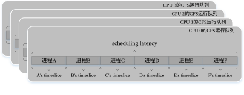
图7 调度延迟与时间片的关系
调度延迟的默认大小由内核全局变量sysctl_sched_latency（以下统称为默认调度延迟）指定并初始化设置为6ms，不过在系统启动阶段内核代码会根据CPU数量重新计算来更新它的值，比如系统拥有4个CPU，那么它会被更新为18ms（6ms × 3）。仅当CFS运行队列的进程数量小于sched_nr_latency时才会以默认调度延迟为准，在这样情况下，每个进程都会按比例计算分割默认调度延迟而得到各自能享用的时间片， 如图8所示。
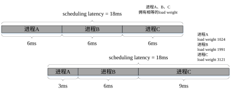
图8 调度延迟的分割方法
如图8所示，上面的情况是每个进程都具有相同的负载权重，从而每个进程将获得相同的时间片。然而下面的情况是每个进程具有不同的负载权重，因此每个进程也获得了不同的时间片。如图9所示给出了以默认调度延迟为准时计算进程时间片的公式。
图9 进程负载权重与时间片的关系式
sched_nr_latency表示在默认调动等待时间内CFS运行队列能容纳的最大进程数，由另外两个变量决定， 如图10所示。
图10 schec_nr_latency的计算公式
sysctl_sched_min_granularity表示进程的最短执行时间，用于保证进程在极端情况下能够执行的最小时间片。如果在系统运行时改变了sysctl_sched_min_granularity或者sysctl_sched_latency，那么sched_nr_latency也将会自动地被更新。对于4个CPU的硬件系统，sysctl_sched_min_granularity的默认值是2.25ms（075ms × 3），因此sched_nr_latency还是等于8，参考表1。如果CFS运行队列中进程数量大于sched_nr_latency，那么调度延迟需要重新计算以确保进程能够享用最短的执行时间。如图11所示给出了重新计算调度延迟的公式。
图11 调度延迟的计算公式
如图12所示给出了一个当CFS运行队列中进程数量大于sched_nr_latency时重新计算调度延迟的例子。
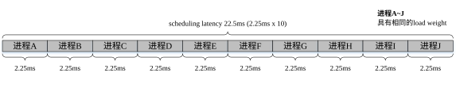
图12 重新计算调度延迟的例子
总之，通过上面方法计算得到的时间片指的是进程可消耗的实际CPU运行时间。在内核调度点处会检查当前进程是否已经用完自己的时间片，一旦用完，将进行调度并执行其他的进程。
时间片相关的变量
下表给出了用于计算调度延迟和进程时间片的相关变量。
运行队列「run queue」、CFS运行队列和红黑树「Red-Black tree」
为了让进程执行起来，须先将进程加入运行队列，然后内核才有机会调度执行它。内核会为每个CPU都创建了一个运行队列（struct rq），它包含三个子运行队列：CFS、RT和DeadLine，不过每个子运行队列都根据各自调度策略进行单独管理。一旦确定进程将在哪个CPU上执行，就会将它加入CPU对应的运行队列中。实际上，进程是被加入了CPU运行队列中的一个子运行队列。
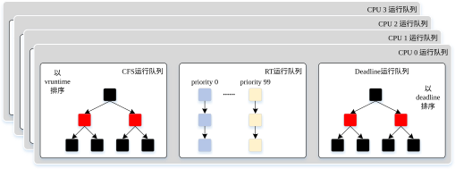
图13 每个CPU的运行队列和包含的子运行队列
尽管这里不会详细分析代码细节，但事实是采用SCHED_RR和SCHED_FIFO调度策略的实时进程将会被加入RT运行队列，采用SCHED_DEADLINE调度策略的进程将会被加入DeadLine运行队列，采用SCHED_NORMAL、SCHED_BATCH和SCHED_IDLE调度策略的进程将会被加入CFS运行队列。
CFS运行队列通过使用红黑树「Red-Black tree」管理加入运行队列的进程。实际上并不是直接将一个进程（任务）或任务组加入CFS运行队列，而是将一个进程（任务）或任务组抽象成一个调度实体「struct sched_entity」，并将调度实体用作一个节点按照vruntime的排序插入到红黑树的合适位置。
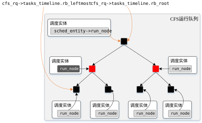
图14 调度实体「sched_entity」与红黑树
由于调度实体的节点在红黑树中以vruntime的大小排序，因此通过访问最左边的节点就能快速地找出最小vruntime的调度实体。当新调度实体「struct sched_entity」插入红黑树时，会通过比较vruntime的大小从根节点开始遍历直到叶子节点，这样就能找出新调度实体的合适位置。因此为了方便快捷，struct cfs_rq实例包含一个struct rb_root_cached类型的成员变量tasks_timeline，它包含一个struct rb_root类型的成员变量rb_root和一个struct rb_node类型的指针变量rb_leftmost，前者用于追踪红黑树的根节点，后者指向红黑树的最左边节点。
描述运行队列的数据结构：struct rq
struct rq的部分字段描述CFS运行队列的数据结构：struct cfs_rq
struct cfs_rq的部分字段任务组「task group」和调度实体「scheduling entity」
在Ingo Molnart提交CFS scheduler, -v17 补丁时已经存在很多关于调度器公平性的抱怨和讨论，出现这种状况的本质原因是CFS更关注任务（进程）之间的公平性。例如，假设系统存在50个进程，根据CFS的原理每个进程都能够公平地分享2%的CPU运行时间，但是如果其中49个进程属于某一个特定用户，另一个进程属于另外一个用户，那么两个用户占用的CPU时间会有很大差异，从而导致显而易见的用户间的不公平性。如图15所示显示了进程间的公平性和用户间的不公平性。
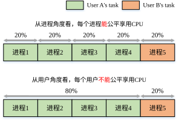
图15 CFS调度器只保证任务间的公平性
为了确保CFS调度器能够处理这种不公平性，必须保证每个用户能够获得50%的CPU时间，因此需要将每个用户创建的进程都划分到一个任务组，从而每个用户对应一个任务组。若给图15添加上任务组的概念，那么它正如图16所示。
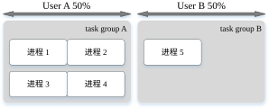
图16 基于任务组「task group」的CFS调度器保证用户间的公平性
实现任务组「task group」概念的CFS调度器能够保证用户间的公平性，因此CFS调度器的这个特性被称为组调度「CFS group scheduling 」，并且目前最新的内核中对RT调度器也支持了该功能。目前内核CFS代码早已集成整合了由 Srivatsa Vaddagiri所开发的系列组调度补丁，比如Add group awareness to CFS - v2 ，同时该系列补丁还实现了一种用于配置任务组的用户ID机制，不过它已从2.6.35内核中删除了，目前仅支持通过cgroup文件系统进行任务组的设置。
任务组不仅可以包含进程，还可以包含其他任务组。如图17所示，进程1和进程2归属于一个任务组，说明任务组既可包含进程也可以包含子任务组。
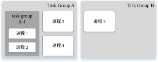
图17 包含子任务组「subtask group」的任务组
Srivatsa提出了调度实体「scheduling entity」的概念，用于将进程和任务组统一抽象成最小的调度单元，并且引入数据结构struct sched_entity去描述调度实体。因此描述进程的数据结构struct task_struct静态定义了一个描述调度实体的成员变量「struct sched_entity对象」，然而描述任务组的数据结构struct task_group只定义了一个指向调度实体的指针变量，从而在创建任务组对象时将会动态分配调度实体「struct sched_entity对象」。当调度器要调度安排一个进程或任务组时不再是直接地将进程或任务组插入CFS运行队列，而是将调度实体插入CFS运行队列。
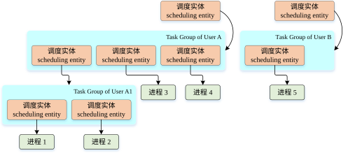
图18 抽象成调度实体「scheduling entity」的任务「task」和任务组「task group」
如图18所示，进程「任务(task)」和任务组都被抽象成了最小调度单元的调度实体，一个任务或任务组对应一个调动实体。如图19所示，调度实体被加入每个任务组指向的CFS运行队列，任务组既能包含一个或多个任务，也能其他的子任务组，构成一个任务组的所有任务和子任务组都会被抽象成调度实体并加入该任务组指向的CFS运行队列，最上层的任务组也会被抽象成调度实体并被加入CFS运行队列。
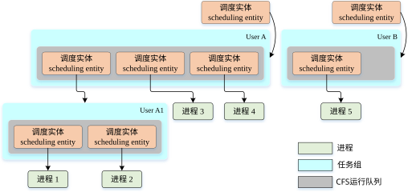
图19 任务组的调度实体被加入CFS运行队列「scheduling entity」
在逻辑上，调度实体具有层次关系和结构。如图20所示，在最左边子图中一个任务组包含一个任务，并且那个任务的调度实体通过parent字段指向任务组的调度实体。
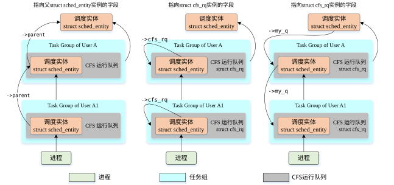
图20 调度实体的层级结构
自从内核开始支持任务组，用于调度的相关字段就从task_struct数据结构转移到描述调度实体的sched_entity数据结构中，并且调度实体被调度器看作最小的调度单元。从最右边的子图可以看出一个任务组对应的调度实体都有一个指向自己的CFS运行队列的指针，并且如果该任务组是另外一个任务组的子任务组，那么它的调度实体将被加入父任务组的CFS运行队列。除此之外，每个调度实体都拥有一个指向父调度实体的指针和一个指向所加入的CFS运行队列的指针。
最顶层的任务组：root_task_group
Linux内核至少存在一个根任务组「root task group」，也称为最顶层的任务组「top-level task group」。如果内核不存在其他独立的任务组，那么所有的调度实体对应任务都归属根任务组，而且它们都被加入到根任务组指向的CFS运行队列。和上述的任务组不同的是根任务组直接使用per-cpu运行队列的CFS运行队列，而不会再单独地分配创建自己私有的CFS运行队列。如图21所示包含了根任务组的概念。
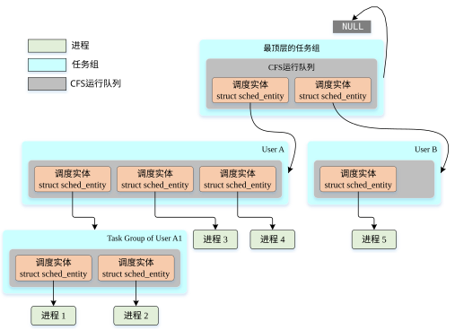
图21 最顶层的任务组「root_task_group」
注意：一个任务组的调度实体会指向一个父调度实体，父调度实体一定是父任务组的调度实体。
描述任务组的数据结构：struct task_group
struct task_group的部分字段描述调度实体的数据结构：struct sched_entity
struct sched_entity的部分字段调度类别「scheduling class」和调度策略「scheduling policy」
在Linux内核中调度器包含5种调度类，支持6个调度策略，其中STOP调度类用于处理最高优先级的stop任务，还有DEADLINE调度类实现了EDF「Early Deadline Firs」算法。
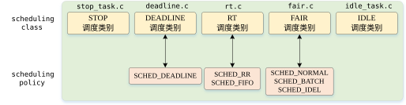
图22 调度类别「scheduling class」与调度策略「scheduling policy」
与调度类无关的调度器核心代码都放在core.c文件中，每种调度类的自身实现代码单独放在一个文件中，还有这种实现方式能够将调度策略的实现代码从核心调度器「core scheduler」的代码中抽象剥离出，使两者之间能够尽量地解耦，从而使调度器具有良好的可扩展性和灵活性。调度类具有优先级，它会影响系统中被挑选出任务的执行顺序。
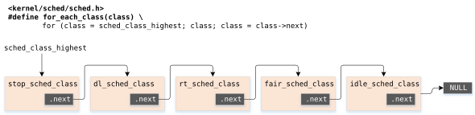
图23 按优先级的顺序遍历调度类别（调度器）
调度器「scheduler」的初始化
sched_init()：初始化调度器
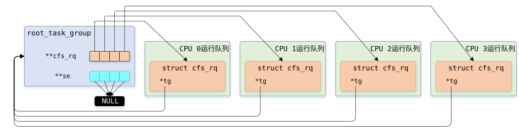
图24 root_task_group初始化